Практичний досвід · журнал «ДентАрт» 2015 №2
Актуальна концепція лазерної технології в стоматології
CURRENT CONCEPT OF LASER TECHNOLOGY IN DENTISTRY
Протягом останніх років лазерна терапія отримала стрімкий розвиток у стоматологічній практиці. Сьогодні використання лазерних технологій невіддільно збагачує спектр зубоврачебних процедур (як терапевтичних, так і хірургічних), водночас підтримуючи звичні і консервативні терапевтичні методи. Це виправдано дає практикуючому стоматологу найбільшу впевненість і є для пацієнта щадним способом, що дозволяє досягти кращого клінічного результату. Далі буде наведено приклади можливого клінічного застосування.
Саме колегам, які мають власний стоматологічний кабінет, особливо важливо розуміти всі можливості і межі застосування лазерної терапії, щоб цілеспрямовано використовувати її в концепції свого лікування.
Зрозуміло, не існує пристрою для всіх сфер застосування, насправді сфера застосування визначається довжиною хвилі лазера. Таким чином, препарування каріозної ділянки і твердих тканин — це завдання твердотільних лазерів Er:YAG. Коли йдеться про ці пристрої як найвищі розробки в галузі, потрібно розуміти, що це пояснює і їхню високу вартість для стоматолога. Цілеспрямоване впровадження в щоденну процедуру пристрою такого рівня має бути концептуально продуманим і економічно раціональним.
Протягом останніх років різні лазерні системи набули неабиякого значення в стоматологічній практиці. Однак принципово лазерне обладнання потрібно розглядати як доповнення до звичайної систематичної терапії, навіть з урахуванням того, що сфера нехірургічних пародонтальних методів лікування була розширена завдяки лазерному прориву. Перш ніж лазерний пристрій вступає в дію, пацієнт має бути повністю підготовлений згідно з базовим методом. Наприклад, поглянувши на останні розробки в галузі лазерної техніки, можна уявити, що видалення конкрементів також може проводитися за допомогою лазера. Однак насамперед використовується бактерицидна дія хвилі лазера, а не здатність видаляти тверді відкладення.
Використання лазера створює бактерицидне середовище і сприяє загоєнню.
Численні дослідження і публікації з найрізноманітніших галузей стоматології підтвердили, що лазер має чудову антибактеріальну дію, працюючи в інфрачервоному діапазоні, він також здатен нейтралізувати бактеріальні токсини. Ця дія набуває чинності вже при випромінюванні хвилі, яка виразно перебуває нижче рівня можливого теплового пошкодження м'якої і твердої тканини. Завдяки тонким і гнучким світловодам лазерне випромінювання можна здійснювати практично в будь-якому бажаному місці, аж до ділянки роздвоєння молярів. Тому використання цих переваг у пародонтальній терапії напрошується само собою. Підвищуючи потужність випромінювання лазера Nd:YAG- або діодного лазера, можна також видаляти епітелій кишень згідно із закритим кюретажем. Як наслідок, дезактивація пародонтальних кишень за допомогою лазера є дуже ефективною при гострому локальному пародонтиті.
У наступних прикладах, без претензії на повний спектр, наводиться лише невеликий вибір терапевтичних процедур, щоб спонукати колег до впровадження інноваційних методів у щоденну практику на благо їхніх пацієнтів.
При цьому не можна недооцінювати, що саме діти, особливо чутливі до болю пацієнти, раді таким методам лікування. Як один із прикладів тут наводиться насічка гострого абсцесу в молочній щелепі (фото 1). Відносно часто трапляються в зубоврачебній практиці випадки лабіального герпесу або болісного стоматиту, які теж дуже добре піддаються лікуванню за допомогою лазерної терапії. Гіперчутливі ділянки зубів можна ефективно обробляти за допомогою безконтактного способу (фото 2).
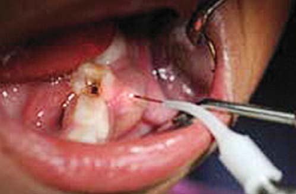
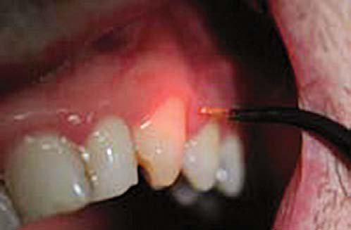
На сьогоднішньому стоматологічному ринку початківцю-лікарю важко дається вибір відповідного пристрою для своєї практики. Поряд із приладами, які мають лише певну довжину хвиль, уже понад рік пропонується Лазер ЕйчЕф/Laser HF (фото 3). Цей прилад поєднує в собі діодний лазер з довжиною хвилі 975 нм, низькоінтенсивний лазер з 660 нм і додаткове джерело високочастотного блока для розрізів і коагуляції.

Фото 3. Прилад, який використовується в нашій клініці, — Лазер ЕйчЕф/Laser HF (REF 452 462).
При терапії низькоінтенсивним лазерним випромінюванням лазер працює в червоному і наближеному до інфрачервоного спектрі випромінювання — для прискорення загоєння рани, усунення запалення і ліквідації гострого або хронічного болю слизових тканин. Низькоінтенсивне лазерне випромінювання забезпечує швидку і ефективну терапію тканин без пошкоджень і усуває запалення і біль (анальгезія). Низькоінтенсивне лазерне випромінювання має фотохімічний вплив, порівнянний з фотосинтезом рослин. При використанні рекомендованої потужності і витримки часу червоні та інфрачервоні промені скорочують оксидантний стрес і збільшують концентрацію АТФ (аденозинтрифосфат), що призводить до активного клітинного метаболізму і усунення запалення. Вплив цього методу винятково біохімічний, а не термальний, тим самим метод виключає пошкодження здорових м'яких тканин.
За допомогою терапії низькоінтенсивним лазерним випромінюванням досягаються такі результати:
- ріст клітин і тканин за рахунок високої концентрації АТФ і поліпшеного біосинтезу білка; розмноження клітин; зміна проникності кальцію крізь клітинну мембрану;
- усунення болю за рахунок підвищеного вироблення ендорфінів; підвищення рівня серотоніну; зниження чутливості больових рецепторів;
- зміцнення імунної системи завдяки підвищенню кількості лімфоцитів і нещодавно відкритого впливу фотомодуляції на кров;
- стимуляція акупунктурних точок.
Терапевтичний лазер дозволяє стоматологу проведення багатьох цікавих процедур.
Антимікробна фотодинамічна терапія (АФДТ) спричиняє нетермічну інактивацію клітин, мікроорганізмів і молекул. Мета антимікробної фотодинамічної терапії — патогенні мікроорганізми. Бактерії, що спричиняють запалення, забарвлюються фотосенсибілізатором, при цьому вони стають вразливими для світлового випромінювання певної хвилі і щільності напруги. Дуже важливу роль при цьому відіграє фотосенсибілізатор — забарвлювальний розчин. Саме завдяки йому при опроміненні атоми кисню в молекулах барвника активуються і спричиняють синглетний стан, що має токсичну дію на клітини.
У центрі уваги тут перебуває Лазер ЕйчЕф/Laser HF, новий апарат для хірургії м'яких тканин. Ця приголомшлива комбінація з коагулятора, діодного лазера і терапевтичного лазера в одному приладі захоплює стоматологів по всьому світу. Високочастотна хірургія наполегливо розвивається з 1970-х років і набула певних переваг порівняно з класичною електрохірургією. Високі частоти самі по собі не є чимось надзвичайним, але постійно використовуються більшістю стоматологів під час хірургічних втручань. Вони є ідеальним і необхідним доповненням лазерної технології при роботі на м'яких тканинах у порожнині рота.
Протягом останніх двох років Лазер ЕйчЕф/Laser HF застосовується в різних хірургічних і терапевтичних процедурах на кафедрі оральної хірургії Стоматологічного університету Загреба, Хорватія. Ці процедури включають хірургію м'яких тканин, ендодонтію, розкриття імплантата, терапевтичні процедури при періімплантиті, при інтраоральному і лабіальному герпесі, афтах, пухлинах та інших патологічних змінах м'яких тканин.
На кафедрі університету було проведено дослідження, метою якого була перевірка антимікробної дії Лазер ЕйчЕф/Laser HF проти фекального ентерокока в каналі зубів. Одну групу пацієнтів ми обробляли в режимі «Деконтамінація кореневих каналів» при потужності 25 мс/сек., 2 Вт, довжина хвилі 975 нм, другу — в режимі «Фотодинамічна терапія» Лазер ЕйчЕф/Laser HF з потужністю від 50 Вт до 100 Вт. Результати при потужності 100 Вт і 60 сек. були значно кращими; з цієї причини ми зупинилися на ній при подальших дослідженнях. Крім того, результати ФДТ трохи кращі, ніж при 975 нм, але ми не стали проводити статистичні аналізи, щоб підтвердити цю тезу.
При повторному відвідуванні пацієнтів у рамках наших клінічних досліджень після процедур низькоінтенсивним лазерним випромінюванням Лазер ЕйчЕф/Laser HF нам не вдалося виявити жодних побічних ефектів або ускладнень. Усі пацієнти одностайно підтвердили відсутність больових відчуттів при мінімальних постопераційних незручностях і максимальний комфорт у зв'язку з повною відсутністю швів і кровотеч.
Клінічний випадок 1
59-річна пацієнтка з фіброепітеліальним поліпом на піднебінні. Процедуру проведено з Лазер ЕйчЕф/Laser HF у режимі «Видалення фібром». Ускладнень виявлено не було.
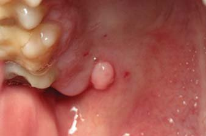
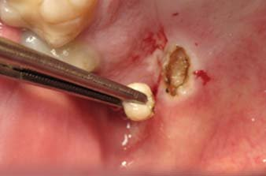
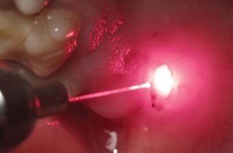
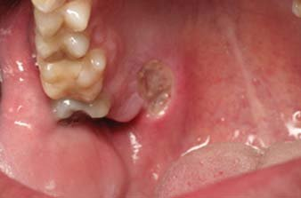
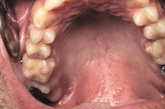
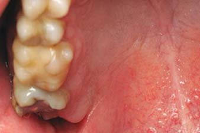
Клінічний випадок 2
Чоловік, 31 рік, фіброма нижньої губи справа. Процедуру було проведено Лазер ЕйчЕф/Laser HF у режимі «Видалення фібром». Не було виявлено жодних ускладнень.
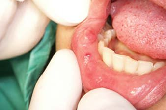
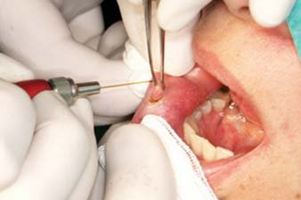
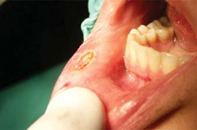
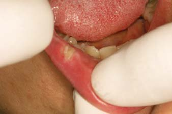
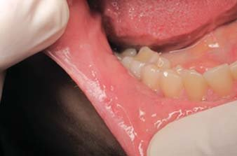
Клінічний випадок 3
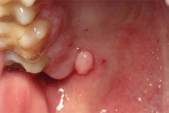
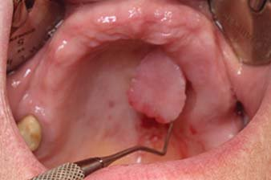
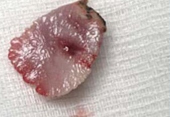
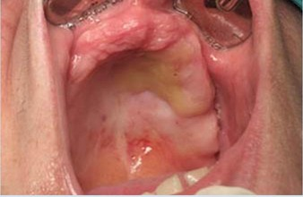
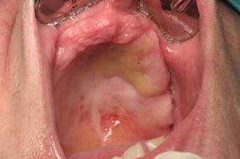
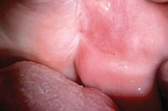
Клінічний випадок 4
67-річна пацієнтка з фіброепітеліальним поліпом і запаленою папілярною гіперплазією на твердому піднебінні. Висічення було проведено за допомогою Лазер ЕйчЕф/Laser HF у комбінації з діодним лазером у режимі «Видалення фібром» і високих частот у режимі «P2», з подальшою обробкою низькоінтенсивним лазерним випромінюванням одразу після видалення. Поліп видалявся за допомогою лазера, гіперплазія — високими частотами. Не виявлено жодних побічних ефектів.
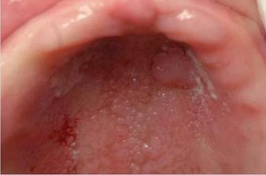
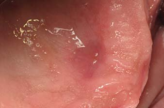
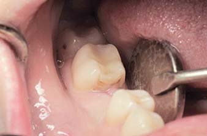
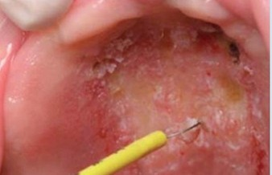
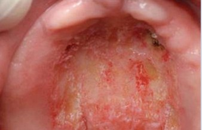
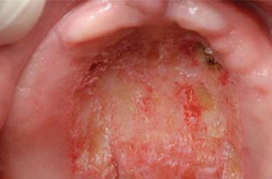
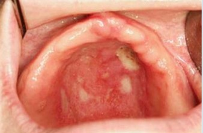
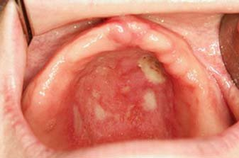
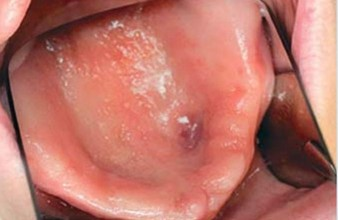
Клінічний випадок 5
34-річна пацієнтка, повторне втручання — розкриття імплантата Лазер ЕйчЕф/Laser HF з подальшою обробкою низькоінтенсивним лазерним випромінюванням одразу після процедури. Ускладнень не виявлено.
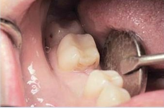
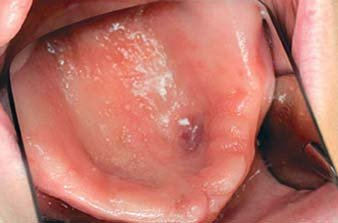
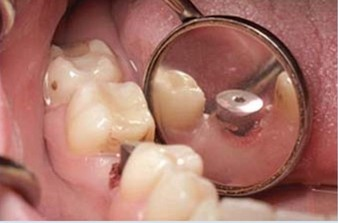
Клінічний випадок 6
Пацієнт, 62 роки, з фіброзним епулісом верхньої щелепи зліва. Процедуру проведено з Лазер ЕйчЕф/Laser HF у двох режимах: «Видалення фібром» і «Гінгівектомія», з подальшою обробкою низькоінтенсивним лазерним випромінюванням одразу після видалення. Біполярний режим використовувався для зупинки кровотечі. Лікування без ускладнень.
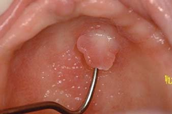
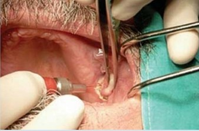
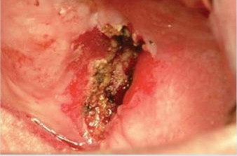
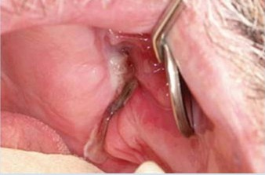
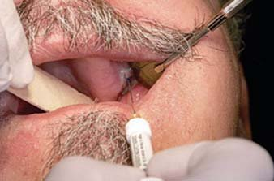
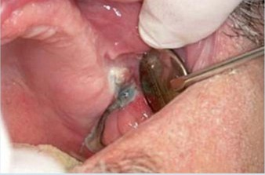
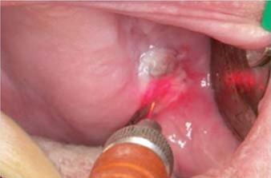
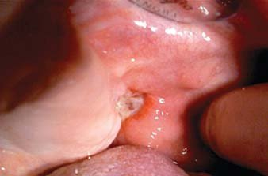
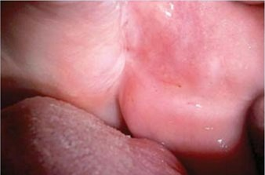
Література
- Parker S. Br Dent J. 2007; 202:185-91.
- Schaffer CJ, Reinisch L, Polis SL, Stricklin GP, Nanney LB. Wound Rep Reg. 1997;5:52-61.
- Fischer SE, Frame JW, Browne RM, Trauter RM. Arch Oral Biol. 1983;28:287-91.
- D'Arcangelo C, Di Nardo, Di Maio F, et al. Oral Surg Oral Med Oral Pathol Oral Radiol Endod. 2007;103:764-73.
- Bryant GL, Davidson JM, Ossoff RH, Garrett CG, Reinisch L. Larygoscope. 1998;108:1-37.
- Greene CH, Debias DA, Henderson MJ, et al. Ann Otol Rhinol Laryngol. 1994;103:964-74.
- Liboon J, Funkhouser W, Terris DJ. Otolaryngol Head Neck Surg. 1997;116:379-85.
- Jin JY, Lee SH, Yoon HJ. Acta Odontol Scand. 2010;68:23-8.
- Romanos G, Nentwig GH. J Clin Laser Med Surg 1999;17:193-7.
- Stubinger S, Saldamli B, Jurgens P, Ghazal G, Zeilhofer HF. Schweiz Monatsschr Zahnmed. 2006;116:812-20.